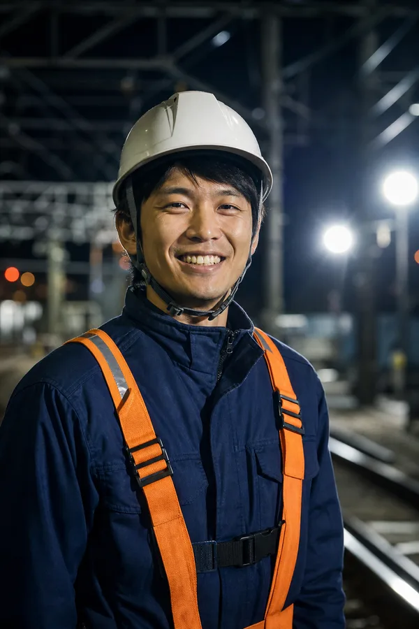
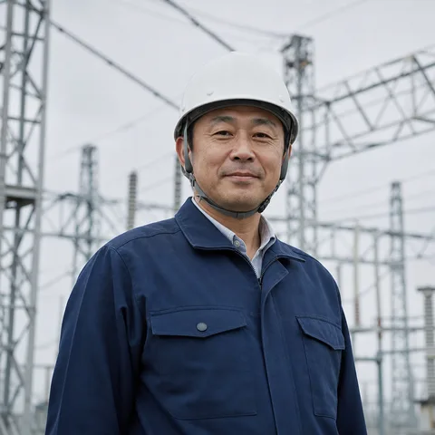
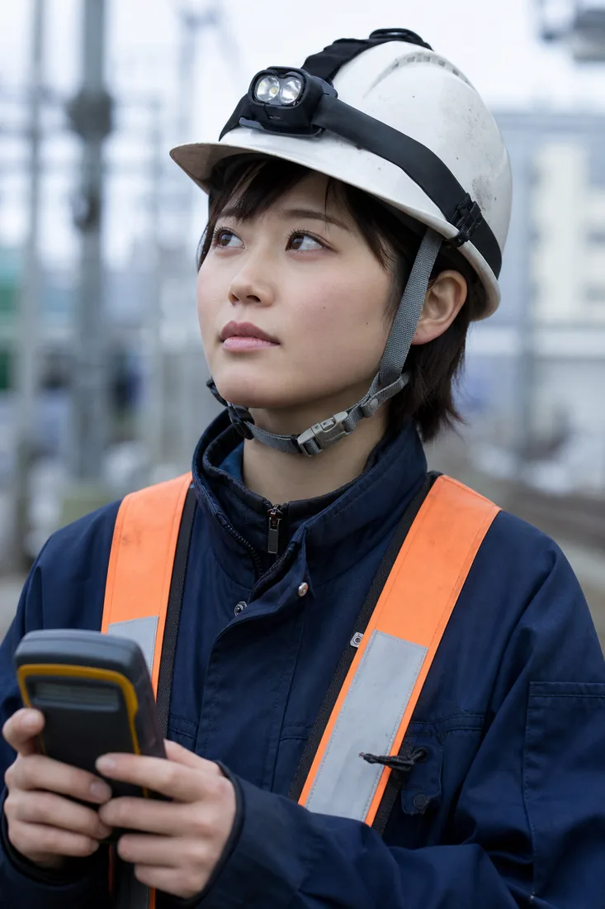
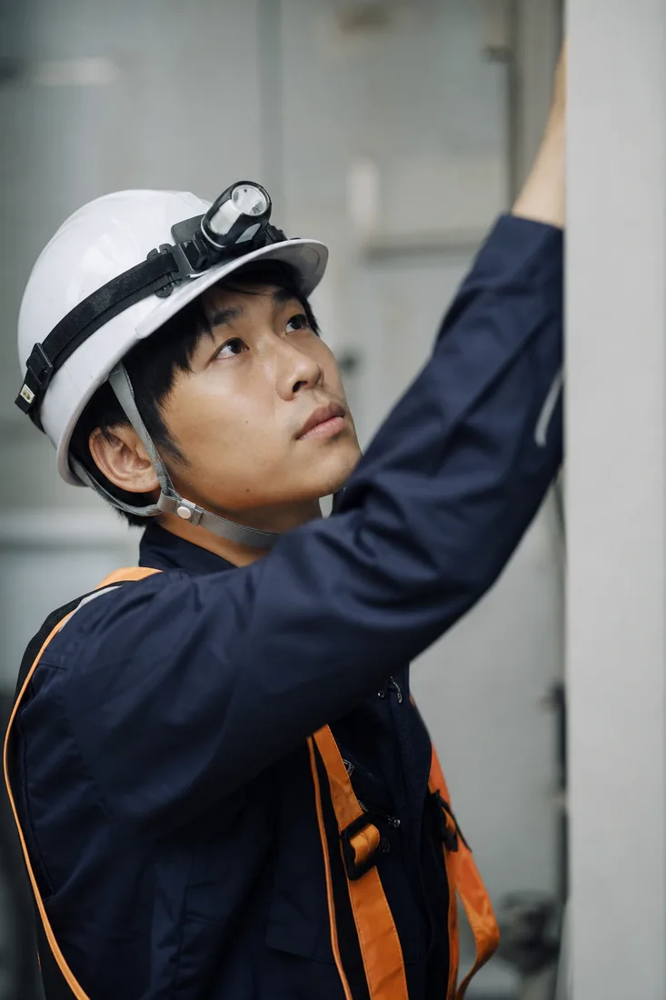
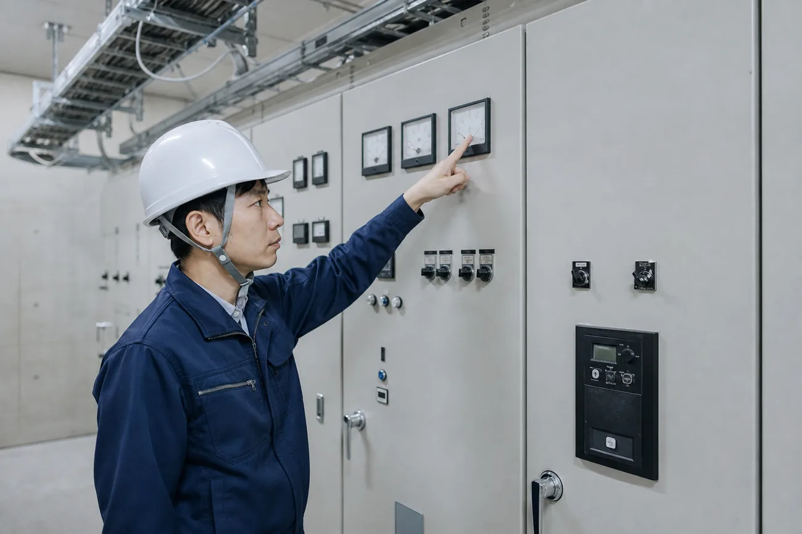

社員一覧Member
-
鉄道電気（電車線）
見えない電気を、
確かめながら渡していく。 K.S. 2016年入社 -

変電・受電設備 止まらないことを、
当たり前にする仕事です。 M.T. 2019年入社 -
信号通信
合図がきちんと届く。
そのために、何度でも確かめます。 A.N. 2021年入社 -

駅設備・建築電気 駅の明かりは、
誰かの帰り道を照らしています。 Y.K. 2014年入社 -

鉄道電気（電車線） 先輩の手つきを覚えることから、
毎日が始まりました。 R.H. 2023年入社 -

施工管理 工程を組み替える判断まで、
現場が教えてくれます。 S.O. 2010年入社
Person 01
見えない電気を、
確かめながら渡していく。
鉄道電気（電車線）
K.S. 2016年入社／高等専門学校 電気電子工学科 卒
- いまの仕事は？
- 架線の張り替えや金具の交換を受け持つ班の班長です。6〜8人の班で夜間の工事に入り、作業の段取りと安全の確認、終わったあとの測定までを見ています。
- 印象に残っている現場は？
- 大雪の夜に架線へ付いた氷を落としに出たことです。朝の一番列車がパンタグラフから火花を出さずに走っていったとき、班の全員で黙って顔を見合わせました。
- 学生のみなさんへ
- 電気は目に見えないので、最初はこわいと感じるかもしれません。でも手順を守れば必ず安全に作業できます。その手順を、ここでは何度でも教えてもらえます。
Person 02
止まらないことを、
当たり前にする仕事です。
変電・受電設備
M.T. 2019年入社／工場の設備保全を経てキャリア入社
- 転職のきっかけは？
- 前職では工場の受変電設備を15年見てきました。同じ電気でも、もっと多くの人の役に立つ設備に関わりたいと思い、40代で転職を決めました。
- 入社して感じたことは？
- 鉄道ならではの決まりごとの多さに最初は驚きました。ただ、一つひとつに理由があると先輩が説明してくれるので、納得して覚えられました。前職の経験もそのまま生きています。
- 転職を考えている方へ
- 設備の仕事をしてきた方なら、きっと役に立てる場面があります。年齢より、確かめることを面倒がらない人かどうかを見てもらえる会社です。
Person 03
合図がきちんと届く。
そのために、何度でも確かめます。
信号通信
A.N. 2021年入社／大学 情報工学科 卒
- いまの仕事は？
- 踏切や信号機の更新工事で、配線の図面をつくり、現場で一本ずつ照合する役目です。工事のあとは、信号が正しく変わるかを試験で確かめます。
- 文系・情報系からでも大丈夫？
- 私は大学で電気をほとんど学んでいません。入社後3か月の研修で基礎から教わり、2年目に第二種電気工事士の資格を取りました。資格の受験費用は会社が負担してくれます。
- 仕事のやりがいは？
- 踏切の前で待つ人が、遮断機が上がるのを当たり前のように待っている。その当たり前を自分が支えていると思える瞬間が好きです。
Person 04
駅の明かりは、
誰かの帰り道を照らしています。
駅設備・建築電気
Y.K. 2014年入社／工業高校 電気科 卒
- いまの仕事は？
- 駅のホームや駅舎の照明、エレベーターの電源などの工事を担当しています。現在は主任として、工事の計画と後輩の指導を受け持っています。
- 働き方について
- 2人の子どもを育てながら働いています。育児休業から戻ったあとは、夜間作業の少ない現場を中心に担当させてもらいました。いまは時間を調整しながら、現場に出ています。
- 後輩に伝えていること
- 図面だけを見ずに、駅を使う人の動きを見ること。照明の位置ひとつで、足もとの見え方が大きく変わります。
Person 05
先輩の手つきを覚えることから、
毎日が始まりました。
鉄道電気（電車線）
R.H. 2023年入社／工業高校 電気科 卒
- 入社のきっかけは？
- 高校の職場見学で研修棟の架線設備を見て、ここで働きたいと思いました。電車が好きだったこともあり、迷わずエントリーしました。
- 1年目はどうでしたか？
- 最初の半年は、先輩の横で工具を渡しながら手順を覚えました。夜間作業にはじめて入った日は緊張しましたが、班長が一つずつ声をかけてくれました。
- これからの目標
- 一人で任される作業を増やして、5年後には班の中心になりたいです。今年は第一種電気工事士の試験に挑戦します。
Person 06
工程を組み替える判断まで、
現場が教えてくれます。
施工管理
S.O. 2010年入社／大学 電気工学科 卒
- いまの仕事は？
- 工事課の課長として、複数の現場の工程と予算、安全をまとめています。発注者との打ち合わせから、夜間工事の立ち会いまで担当します。
- 施工管理のおもしろさは？
- 夜の数時間で終えるために、何をどの順番で進めるか。天候や機材の状況に合わせて、その場で工程を組み替える判断がいちばん鍛えられるところです。
- 学生のみなさんへ
- 大学で学んだ電気の知識は、現場で何倍にもなって返ってきます。机の上の理論が、目の前の設備で確かめられる仕事です。